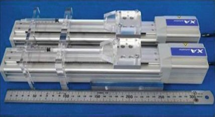

Actuated-tip devices · nit_nakazato2017
Peristaltic catheter
Peristaltically propelled active catheter: hydraulic two-balloon self-propelling catheter for the radial artery, driven by motorised syringes

1 / 3


- Family
- Actuated-tip devices (actuated-device)
- Devices
- its own active catheter, self-propelled: 'a self-propelled active catheter was realized without a guide wire' (Sec. 2); no off-the-shelf device
- Degrees of freedom
- 1: forward locomotion by a travelling wave of two alternately inflated sections A and B; no steering, no rotation (Sec. 2, Fig. 1)
- Push
- Other drives
- Twist
- None
- Tested up to
- Phantom
- Sim-to-real
- None found — No simulation-trained controller found for this robot.
Testing
- Highest level
- Phantom
- What was tested
- phantom: forward driving over 30 mm in silicone tubes (ID 2.5 and 3.0 mm, Young's modulus 1.7 MPa, water-glycerin pseudo-blood 5.0 mPa s) at feeding rates 140-570 ul/s (Sec. 4.2-4.4, Table 1, Fig. 7); EVE simulator: moved forward in the right internal and external carotid arteries at radii of curvature up to 1.2 cm, moved backward at 0.8 cm (Sec. 5.3, Fig. 9). Number of runs N.R.
- Key numbers
- max speed 4.79 mm/s at 570 ul/s and 370 ul feed (Sec. 4.4); design target 5 mm/s (Sec. 3.1); feed volume 230-400 ul (Sec. 4.3); catheter phi 2.0 x 23.0 mm (Fig. 3)
Mechanism
- Push (translation)
- other: peristaltic self-propulsion inside the vessel: saline pressure-fed and aspirated alternately in balloon sections A and B, which grip the wall by friction and extend (Sec. 2, Fig. 1)
- Twist (rotation)
- none
- Device range
- catheter phi 2.0 mm x 23.0 mm, feeding pipe phi 0.4 mm (Fig. 3); balloon sections of silicone rubber OD 0.8 mm, wall 0.12 mm, joined by silicone tubes OD 0.4 / ID 0.3 mm (Sec. 3.1)
- Target anatomy
- radial-artery access for coronary treatment (radial ID 2.0-3.5 mm, Abstract); tested in silicone tubes of ID 2.5 and 3.0 mm and in the right internal and external carotid arteries of an endovascular surgery simulator (EVE, FAIN-Biomedical) (Sec. 4.2, 5.2)
Sensing and interface
- Force sensing
- none
- Leader and haptics
- none (feed sequence of the two syringes; operator interface N.R.)
- Imaging
- N.R. (photographed in a transparent simulator)
- Sterility
- N.R.
Size
- Footprint (mm)
- actuator: two syringe-and-linear-slider units in parallel, each 323.5 x 111.0 mm (Figs. 4-5 captions); connected to the catheter by a 1 m silicone tube (ID 0.5, OD 1.0 mm) (Sec. 3.2)
- Mass (kg)
- N.R.
Simulation
- Simulation model
- none found
- Sim-trained controller
- none found
Versions
- Lineage
- 2010: in-pipe micro mobile robot using peristalsis, hydraulic (nakazato2010_inpipe, J. Mech. Sci. Technol. 24:51-54; MAMM 2010), the mechanism the lab later tested 'using pseudoblood vessels with an inner diameter of <=6 mm ... assuming that the catheter is inserted in a femoral artery' (nakazato2017 Abstract; 2010 papers title only) -> 2016/2017: radial-artery catheter, section A 5 mm + section B 5/6/7 mm, phi 2.0 x 23.0 mm (nakazato2017_peristaltic Sec. 3.1, Figs. 2-3; MAMM-2016 proceedings, Springer 2017)
Sources
- Development of Peristaltically Propelled Active Catheter Used in Radial Artery · Microactuators and Micromechanisms, 2016 · doi:10.1007/978-3-319-45387-3_8 [nakazato2017_peristaltic]
- Development of an In-pipe micro mobile robot using peristalsis motion · Journal of Mechanical Science and Technology, 2010 · doi:10.1007/s12206-009-1174-x [nakazato2010_inpipe]
- The Design of Endovascular Robots for Cardiac Interventions: A Survey · Journal of Field Robotics, 2024 · doi:10.1002/rob.22480 [alekseeva2025_design]
Notes
- Notes
- N3 2026-11-08, from review_comparison Sec. 1.3 (Alekseeva Table 14 row 6, 'Peristaltically Propelled Active Catheter', ex vivo phantom TRL3). In scope as an actuated device: the catheter moves itself inside vessel models by fluid pressure, and the fluid is moved by syringes on electric sliders 'consisting of a stepping motor and ball screws' (XA-42-D, SUS Corp., Sec. 3.2). Alekseeva's 2010 reference is an in-pipe robot, not a catheter. Main picture is the drive; the catheter itself (Fig. 3) is in the gallery.
This record
- Read level
- full — full (nakazato2017_peristaltic); title (nakazato2010_inpipe); review-only (alekseeva2025_design Table 14 row 6)
- Picture
- nakazato2017_peristaltic Fig. 5 (syringes on two stepping-motor linear sliders), p. 84 ↗ — licence: publisher copyright (Springer); grade C
- Picture changes
- native embedded raster extracted (CMYK converted to RGB); no crop; no edit; not upscaled
- Found by
- actuated-tip: Search of actuated-tip and magnetic devices.
- Data
- JSON · YAML:
records/robots/nit_nakazato2017.yaml - Correction
- Suggest a correction [repository not created yet]